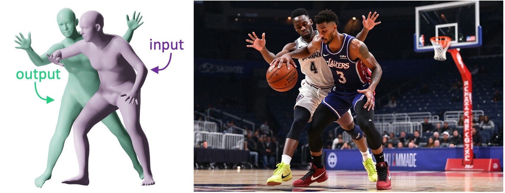
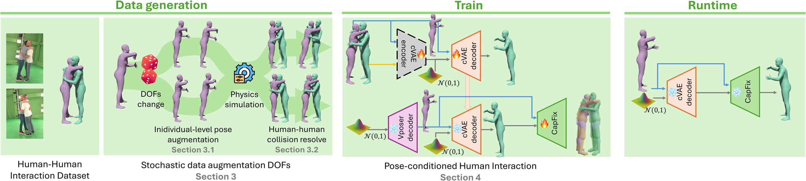
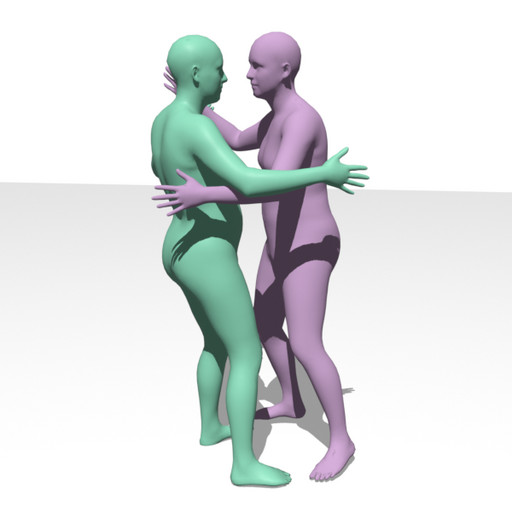

GNOCHI: Generative Neural mOdel for Close Human-Human Interactions
Pose-conditioned, collision-aware generation of 3D humans in close interaction
1 Universidad Rey Juan Carlos, Madrid, Spain
Pose-conditioned, collision-aware generation of 3D humans in close interaction
1 Universidad Rey Juan Carlos, Madrid, Spain

Watch the 7-minute paper videoCreating realistic 3D human-human interactions in virtual environments is challenging due to the high degrees of freedom in the human body and the need for physically accurate poses that do not collide with each other. Traditional methods for human-human interaction are based on motion tracking or 3D body reconstruction, but lack generative capabilities. Recent generative methods enable the synthesis of individual or interacting motions via text or image input, but generally fall short in modeling close interactions.
This paper introduces a novel generative model for close 3D human-human interactions using a conditional variational autoencoder (cVAE), which generates poses for one human conditioned on the pose of another, allowing for controlled and diverse interaction synthesis. To train our model, we address two underlying long-standing challenges in the field of human-human interaction: data scarcity, for which we propose an automated supervised data augmentation strategy that generates synthetic yet realistic interaction poses; and collision awareness in generative approaches, for which we propose a self-supervised loss based on a collision resolution technique using volumetric proxies to ensure physically correct interactions. We extensively evaluate the capabilities of our model, and demonstrate a wide variety of plausible and physically correct interactions, not possible to generate with current state-of-the-art methods.

Starting from captured human-human interactions (Hi4D), we stochastically perturb individual body joints and resolve the resulting collisions with a physics simulator, growing 5,744 captured poses into 61,641 physically valid interaction poses, fully automatically.
A cVAE learns to generate the SMPL parameters of a reacting person conditioned on the pose of another. Being probabilistic, it can sample many diverse, semantically consistent reactions for the same input pose, and its continuous latent space supports smooth interpolation.
A second network, trained with a self-supervised collision loss over capsule-based volumetric proxies, refines each generated pose to remove remaining interpenetrations, keeping poses natural while making the interaction physically correct.
These are the real 3D meshes generated by our model, rotate and zoom freely. The purple body is the fixed conditioning pose; each green body is a different reaction sampled from the latent space. Conditioning poses come from the held-out Hi4D test split (ID) or from standalone Mixamo animations never seen in training (OOD).
Four sampled reactions per method, each shown from two viewpoints. GNOCHI reactions respond naturally to the conditioning pose; BUDDI samples often lack contextual coherence and show interpenetrations.
The reaction pose travels a continuous path through the latent space while the conditioning pose stays fixed, scrub the slider or press play, and rotate the scene at any time. Transitions stay natural and collision-free along the whole path.

3D poses Generated imageDrag the slider. Our pose pairs act as a fine-grain control signal for image generation models such as FLUX.1-Depth, enabling controlled synthesis of photorealistic close interactions.
12× less
mesh interpenetration than BUDDI on in-contact samples (182 vs. 2,284 cm³ intersected volume)
4.02 / 5
perceived plausibility of generated poses in a 35-participant user study, statistically equivalent to real captured data (3.97 / 5)
61,641
physically valid interaction poses in our augmented dataset, grown automatically from 5,744 captured poses
Equivalence between generated and ground-truth ratings confirmed with TOST (δ = 0.5, p < 0.0001). See the paper for the full ablation and evaluation.
@article{gomeznogales2026gnochi,
author = {Gomez-Nogales, Gonzalo and Comino-Trinidad, Marc and
Casado-Elvira, Andres and Casas, Dan},
title = {{GNOCHI}: Generative Neural mOdel for Close Human-Human Interactions},
journal = {Computer Graphics Forum},
year = {2026},
note = {Presented at the ACM SIGGRAPH / Eurographics Symposium
on Computer Animation (SCA) 2026}
}
This work has been partially funded by the Comunidad de Madrid through two initiatives. First, in the framework of the Multiannual Agreement with the Universidad Rey Juan Carlos in line of Action 1, “Estímulo a la investigación de jóvenes doctores”, for the project “Captura de humanos restringida por sus entornos” (Acronym: CaptHuRe) with reference M2736. Second, the presented results are also part of the project “Inteligencia artificial para la industria 4.0: generación de datos, modelado avanzado, optimización e interpretabilidad” (Acronym: IDEA-CM), with reference TEC-2024/COM-89, funded through the call for grants for collaborative R&D projects under the modality of “Programas de Actividades de I+D en Tecnologías 2024”, according to Order 3177/2024.